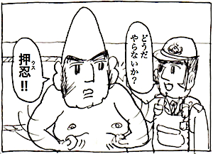

Progress! Fermentation School / 進め！発酵学園
↑amazon
漫画で読む発酵の世界
著者：黒沼真由美 監修：舘博
みどり書房（2020)
The World of Fermentation in Manga Form
Mayumi Kuronuma / Supervised by Hiroshi Tachi
Midori shobo（2020)
↑ to the 1st episode
連載中web漫画
「進め！発酵学園」(web科学バー)
Currently being serialized Manga
"Progress! Fermentation School"
(in web kagaku-bar)
↓ to the latest episode
Characters
From left to right,
lactobacilli "Sandayu Nyu" (Lactobacillus sakei),
koji mold "Koji Orizae" (Aspergillus oryzae),
yeast "Kamosuke Kobo" (Saccharomyces cerevisiae),
nitrate-reducing bacteria "Kaeru Shosan" (Pseudomonas) sp.
Bottom: acetic acid bacteria "Tsuntaro Sakusan"(acetobacter aceti).
Episode 1: In the Dining Room
The senior A.oryzae makes the junior L.sakei and S.cerevisiae eat glucose. L.sakei is
amazed by S.cerevisiae, which gobbles them up without restraint, but A.oryzae says, "That freshman is a horrible guy. He turns all the glucose I make into alcohol."
Episode 9: A World with Less Oxygen
Oxygen is low and S.cerevisiae is starved. A.oryzae hydrolyze the starch to make glucose. S.cerevisiae eats the glucose and produces alcohol.
Episode 10: A world with a lot of oxygen.
When there is a lot of oxygen, S.cerevisiae breathes well and increases. He does not make alcohol.
Episode 11: A World Without Oxygen 1
L.sakei is a passive anaerobic lactobacillus and does not need oxygen. He recognizes that oxygen is like a dangerous drug that burns everyone up and ravages them.
Episode 14: Some Oxygen Talking 2
L.sakei admonishes S.cerevisiae to "steadily ferment ethanol without touching the dangerous oxygen". S.cerevisiae looks puzzled.
Episode 15 : Calculation
Pseudomonas sp. says that eukaryotes should thank their intracellular mitochondria for their high ATP synthesis efficiency. As a non-sugar-consuming Pseudomonas genus, he says sarcastically that L.sakei and S.cerevisiae are counting on the wallet of A.oryzae.
Episode 16: Rebuttal
The old-fashioned L.sakei who argue that it is an Bastard act to increase energy production efficiency by using dangerous inorganic substances such as oxygen and nitric acid and leave.
Episode 17: Narrowly defined
A.oryzae, Pseudomonas sp. and S.cerevisiae discuss to let L.sakei, who are obsessed with fermentation in the narrow sense of the word, which they do only in the glycolytic system, know the way of life and the position of various microorganisms. Although A.oryzae is recognized as "national fungus" of Japan, at this point in time, he is not interested in the convenience of human beings.
Episode 18: Investigation
A.oryzae and S.cerevisiae researching the history of Sake in the library. Pseudomonas sp. whispered to S.cerevisiae about the origin of A.oryzae being recognized as a "national fungus". The book A.oryzae was reading was "Osumi Province Fudoki," which describes the process of making the first ancient alcoholic beverage using enzymes in priestess' saliva called "Mouth Bited Sake.
Episode 23: The Nomenclator
Every year A.oryzae visited his author, Dr.Hermann Ahlburg's glave in the Yokohama Foreign General Cemetery on August 28, the anniversary of his death. L.sakei found the date, August 29, engraved on the tombstone. Newspapers at the time said that he died at 12:20 p.m. on August 28.
Episode 27: History
An annoying relative, Aspergillus flavus, reveals to A.oryzae, "You must have gene that synthesizes aflatoxin, too". A.oryzae admits it, but he thinks that his gene for aflatoxin synthesis must have been broken from the beginning, since he fell into the steamed rice offered by ancient Japanese. He thinks back to his encounter with Japanese people that so dependent on him that almost stopped eating meat instead of eating his fermented foods.
Episode 28: Salute
L.sakei, which had been restraining A.flavus, heard the recollection of A.oryzae and was enlightened. His memory of Japanese people is the reason why he is the "national fungus", A.oryzae, which has been cultivated by Japanese since ancient times. L.sakei and S.cerevisiae salute A.oryzae.
Episode 45: Convoy A
S.cerevisiae that fails to brew and is put in jail for the night and then escorted by police car to a place of labor service. The cunning old policeman tells him that he will soon be able to make miso and soy sauce by working together with A.oryzae and L.sakei. S.cerevisiae is move to tears.
Episode 46: Convoy B1
In the other patrol car, a young policeman admonishes slumped A.oryzae, saying, "I used to be a juvenile delinquent, too. From now on, you can be a eu ("good" in Greek) person," but A.oryzae replies, "I'm a eumycetes."
Episode 47: Convoy B2
The young policeman tries to show his sympathy for A.oryzae by saying "Fermentation and decay are distinguished by human convenience". A.oryzae argues that the opposite of fermentation is not decay but aerobic respiration for living creatures, in terms of energy production efficiency. The young cop is confused. He says, "You mean, like, the opposite of love is not hate but indifference?" drawing on a quote from Mother Teresa.